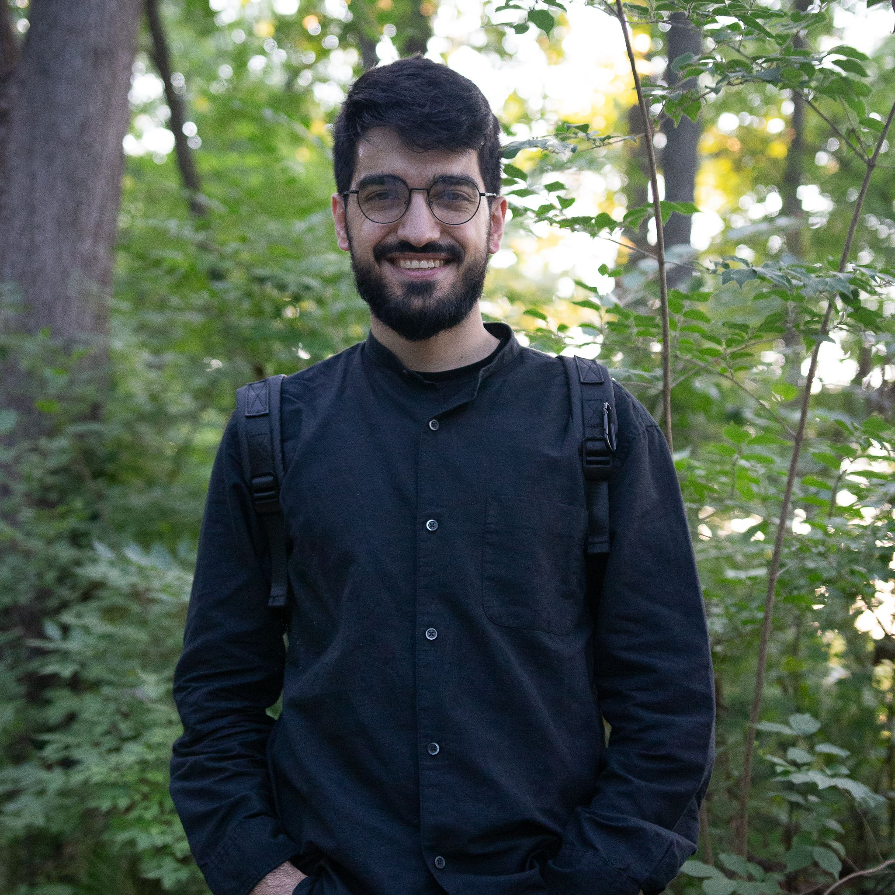

Hi, I'm Ahmad Chalhoub. I hold a bachelor's degree in Robotics Engineering from Detroit Mercy and currently work as a perception engineer in Michigan, leading perception development for geofenced autonomous trucks at Mitsubishi Electric Automotive America. My work focuses on designing and implementing a combination of deep learning and 3D computer vision algorithms to solve real-world logistics problems. I work on the full development pipeline, going from initial research, prototyping, planning for data collection and labeling, model training and evaluation, integrating models into the overall system using ROS, and testing and validating the solutions that I build.
I am also a part-time master's student at the University of Michigan, Ann Arbor, researching Vision-Language Models (VLMs) for end-to-end autonomous driving.
Beyond robotics, I'm very passionate about the topic of causality and its intersection with AI, philosophy, and morality. If you'd like to chat about any of these, feel free to reach out! You can contact me at chalhoah@gmail.com or aachalho@umich.edu.